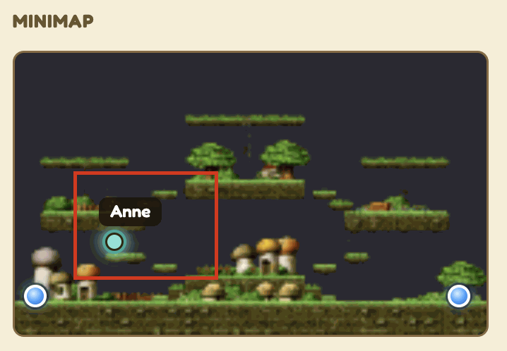
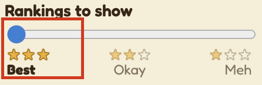
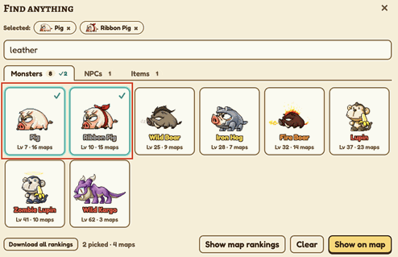
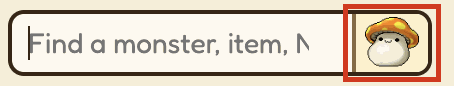

Edit modeDrag nodes to move them. Click empty ground to copy its coordinates.x –, y –
Find anything
Drag ⠿ to move maps between tiers. Edits are saved in this browser.
Help
An interactive map of Victoria Island for MapleStory Classic: where every monster, item, NPC and map is, and which maps are best for farming. Here's how to do the common things.
Find an NPC
Try finding Anne - just type "anne" anywhere on the webpage (no need to click on the search box), then press Enter.
Anne's map should be highlighted
Click the map to open its details.
Her location should be highlighted in the minimap.

Find a monster
Try finding Slimes - just type "slime" and hit enter.
Every map with Slimes gets a ring, with stars for how good it is to farm: ★★★ best, ★★☆ okay, ★☆☆ meh.
The Rankings to show slider (top left) hides the weaker spots. Set it to Best to see only the top maps, or Meh to see them all.

Hover a ringed map to see which of your monsters are there and its stars.
Find an item drop
Try finding item drops by monster. Type "leather" and hit enter.
"leather" also matches the Leatherworking Station, so Enter opens Find anything: pick Leather on its Items tab.
Every map with a monster that drops it (Pigs, Boars, Lupins and more) gets a ring.
In a map's details, the monsters that drop it are highlighted with a "Drops Leather" line.
Optional: narrow down your selection by clicking on some monsters

Find a crafting station
Type the craft: "smithing" finds the Anvil, "tailoring" the Sewing Machine. "crafting station" rings all of them.
Pick several things at once
Click the mushroom button next to the search box (or type, then TabEnter) to open Find anything.

Pick any mix of monsters, NPCs and items from the three tabs. Everything picked is ringed on the map.
Hover a monster card to see its common drops.
If what you type matches more than one thing (like "stump"), Enter opens this dialog so you can choose.
Compare and rank farming spots
Pick a monster or item in Find anything, then click Show map rankings.
Each monster gets a card listing its maps as Best, Okay and Meh, with how many spawn there and their share of the map's monsters.
Disagree? Drag a map by its ⠿ handle to another spot or tier. Your rankings are saved in this browser; Reset to default undoes them.
Find shows that map on the world map. Return to ranking brings you back.
Find maps for your level
Set Your level (top left). Every map and monster is coloured by how hard it is for you: see the legend at the bottom left. Yellow is good farming.
Find a map and get around
Type a map name, like "sleepywood", and press Enter, or click any map on the world map.
The panel on the right shows its level range, monsters, NPCs and minimap. Click a portal on the minimap to go to the map it leads to.
Drag to move the map; scroll or pinch to zoom. Turn Hidden streets and Forgotten Hollow on or off at the top left.
Keyboard shortcuts
a–z Start a search from anywhere
Enter Pick the match, or open the map
Esc Close a panel or dialog, then clear the search